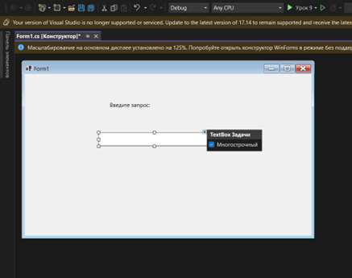
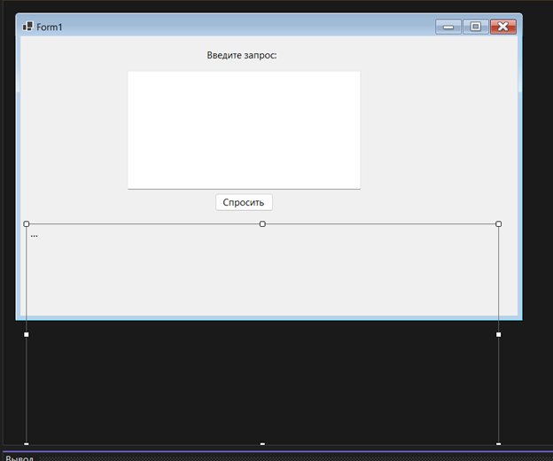
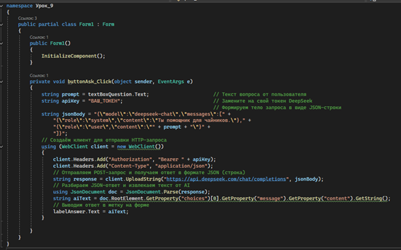
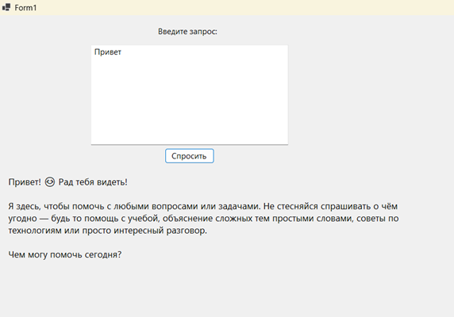
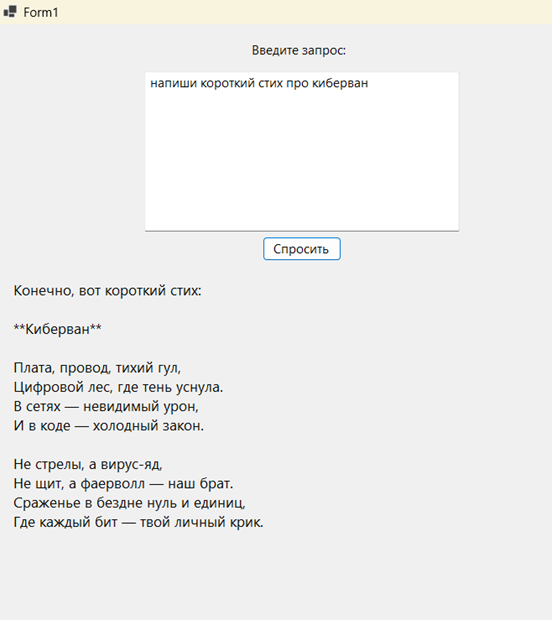

Теоретическая часть
В этой части мы разберём ключевые понятия 👇
Таким образом, чтобы использовать DeepSeek, наше приложение должно отправить HTTP-запрос в интернет на специальный адрес DeepSeek API, передав в нём текст вопроса и наш токен. Сервер обработает запрос и вернёт ответ в формате JSON — из него мы извлечём нужный текст и покажем пользователю.
Глава 1 — Создание проекта и элементов формы
-
▸
Label с текстом «Введите запрос:»,
рядом TextBox (назовём его
textBoxQuestion) — сюда пользователь будет вводить вопрос. Его можно сделать многострочным и растянуть.

-
▸
Button (назовём его
buttonAsk) с текстом «Спросить». Эта кнопка будет отправлять запрос. -
▸
Label для вывода ответа (например,
labelAnswer). Можно сразу очистить у него текст или поставить «...». Нужно сделать labelAnswer многострочным (установитьAutoSize = Falseи задать подходящий размер), чтобы ответ помещался. Можно растянуть за пределы формы, чтобы текст точно помещался, когда раскроете приложение во весь экран.

textBoxQuestion,
labelAnswer,
buttonAsk).
Это не обязательно, но помогает разбираться в коде.Глава 2 — Написание обработчика кнопки и отправка запроса
buttonAsk_Click
в коде формы. Это будет наш обработчик события нажатия кнопки.buttonAsk_Click
напишем код отправки запроса. Алгоритм такой:
- 1.получить текст из textBoxQuestion
- 2.сформировать JSON-запрос
- 3.послать его на DeepSeek API
- 4.получить ответ (строку JSON)
- 5.распарсить JSON и вывести содержимое ответа в labelAnswer
buttonAsk_Click
(C#):private void buttonAsk_Click(object sender, EventArgs e) { string prompt = textBoxQuestion.Text; // Текст вопроса от пользователя string apiKey = "ВАШ_ТОКЕН"; // Замените на свой токен DeepSeek // Формируем тело запроса в виде JSON-строки string jsonBody = "{\"model\":\"deepseek-chat\",\"messages\":[" + "{\"role\":\"system\",\"content\":\"Ты помощник для чайников.\"}," + "{\"role\":\"user\",\"content\":\"" + prompt + "\"}" + "]}"; // Создаём клиент для отправки HTTP-запроса using (WebClient client = new WebClient()) { client.Headers.Add("Authorization", "Bearer " + apiKey); client.Headers.Add("Content-Type", "application/json"); // Отправляем POST-запрос и получаем ответ в формате JSON (строка) string response = client.UploadString("https://api.deepseek.com/chat/completions", jsonBody); // Разбираем JSON-ответ и извлекаем текст от AI using JsonDocument doc = JsonDocument.Parse(response); string aiText = doc.RootElement .GetProperty("choices")[0] .GetProperty("message") .GetProperty("content") .GetString(); // Выводим ответ в метку на форме labelAnswer.Text = aiText; } }

Здесь мы используем класс WebClient (простая обёртка для HTTP-запроса) и парсим
ответ с помощью System.Text.Json.JsonDocument. После выполнения этого кода в
labelAnswer
появится ответ от DeepSeek.
Разбор кода buttonAsk_Click — по шагам
textBoxQuestion считывается текст,
который ввёл пользователь. Это и есть вопрос, который мы отправим нейросети. Текст
сохраняется в строковую переменную prompt, чтобы с ним было удобно работать
дальше.deepseek-chat и массив messages. В массиве сообщений первым идёт
сообщение с ролью system — оно задаёт поведение нейросети (мы говорим AI,
что он «помощник для чайников»). Второе сообщение имеет роль user и
содержит реальный текст вопроса пользователя из переменной prompt.Authorization с нашим токеном доступа и Content-Type, указывающий,
что данные отправляются в формате JSON. Без этих заголовков сервер не примет запрос.UploadString отправляет POST-запрос на адрес DeepSeek API
и передаёт сформированный JSON. В ответ сервер возвращает строку, которая тоже является
JSON-документом. В этом документе содержится сгенерированный ответ нейросети.choices, затем в объекте
message, и далее в поле content. Именно это поле содержит текст,
который сгенерировала нейросеть.labelAnswer на форме. В
результате пользователь видит ответ AI прямо в окне программы.Таким образом, данный метод выполняет полный цикл работы AI-ассистента: получает текст от пользователя, отправляет его в нейросеть через API, принимает ответ и отображает его в интерфейсе Windows-приложения.
Глава 3 — Тестирование

Полный код программы
using System; using System.Windows.Forms; using System.Net; using System.Text.Json; namespace AIAssistant { public partial class Form1 : Form { public Form1() { InitializeComponent(); } private void buttonAsk_Click(object sender, EventArgs e) { string prompt = textBoxQuestion.Text; string apiKey = "ВАШ_ТОКЕН"; // Вставьте свой API-токен DeepSeek string jsonBody = "{\"model\":\"deepseek-chat\",\"messages\":[" + "{\"role\":\"system\",\"content\":\"Вы помогающий ассистент.\"}," + "{\"role\":\"user\",\"content\":\"" + prompt + "\"}" + "]}"; using (WebClient client = new WebClient()) { client.Headers.Add("Authorization", "Bearer " + apiKey); client.Headers.Add("Content-Type", "application/json"); string response = client.UploadString("https://api.deepseek.com/chat/completions", jsonBody); using JsonDocument doc = JsonDocument.Parse(response); string aiText = doc.RootElement .GetProperty("choices")[0] .GetProperty("message") .GetProperty("content") .GetString(); labelAnswer.Text = aiText; } } } }

Важное — API DeepSeek
На данный момент (08.02.2026) его оплачивает Гафаров Акбар. Если API будет недоступен — напишите мне, либо вручную получите его сами и согласуйте 100 рублей у руководителя. Получить можно тут: platform.deepseek.com/api_keys
Замените "ВАШ_ТОКЕН" в коде
на скопированный ключ выше. Не передавайте ключ посторонним — это как пароль!
Итоги урока
Мы сделали приложение, где по нажатию кнопки отправляется текст на AI-сервис DeepSeek, а ответ выводится в окне программы. В конце урока кратко обсудите с учениками результаты: например, какой ответ дали дети, чем программа отличается от простого консольного чата.
Дети познакомились с тем, что такое:
- API — набор правил для обмена данными между программами
- HTTP-запрос по сети (по аналогии с «заказом в ресторане»)
- Как читать ответы в формате JSON
- Как использовать WebClient для отправки POST-запросов
- Как парсить JSON с помощью JsonDocument
Предложите детям самостоятельно расширить приложение: при помощи ChatGPT придумать новые «фишки» — смену роли ассистента (изменить системное сообщение), сохранение истории переписки в файл или изменение оформления окна (цвета, шрифты) для более интересного интерфейса. Так ученики поймут, что даже простое приложение можно сделать сложнее с помощью идей из ChatGPT!